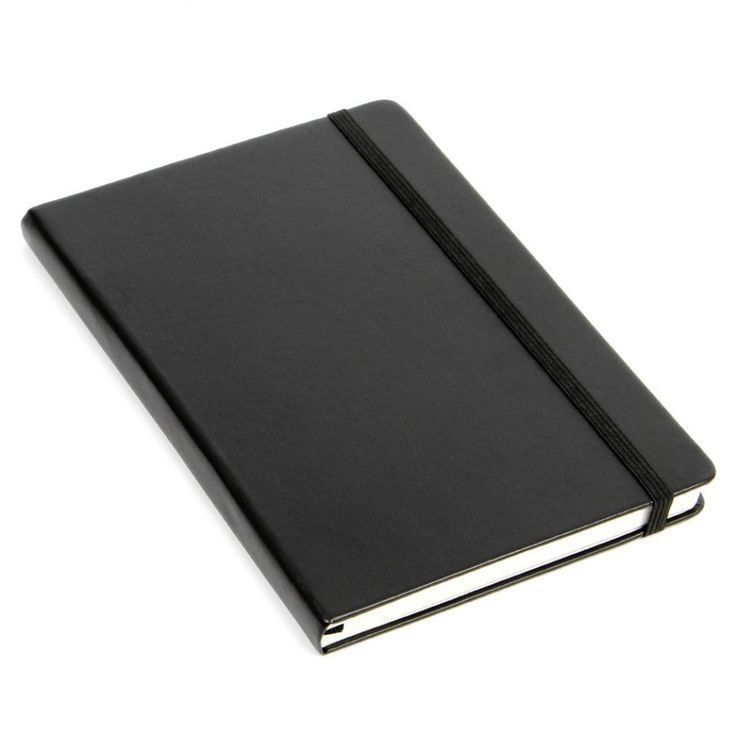

Cuaderno Universitario
Q25
Descripción
Cuaderno universitario de 100 hojas con papel de alta calidad de 75g/m². Formato estándar con margen rojo y líneas azules perfectamente espaciadas para una escritura ordenada y legible. Pasta dura resistente que protege las hojas y proporciona una superficie firme para escribir. Espiral metálico duradero que permite abrir completamente el cuaderno. Ideal para tomar apuntes en clases, hacer tareas y proyectos universitarios. Papel libre de ácido que no se amarillea con el tiempo.